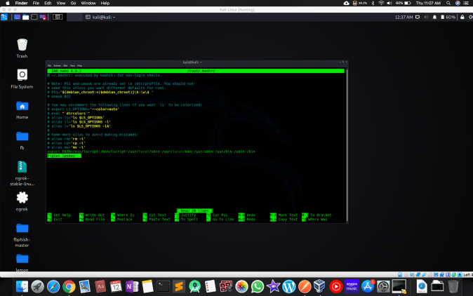

Make Cool linux Terminal Header
apt-get install figlet
nano /root/.bashrc
You want your terminal to be customized with awesome script every time you fire it up, huh?! Well, look no further because I am here to answer this calling!
This “How-To” Will be short, descriptive, and to the point! So, let’s get right into it, shall we then?
_____________________________________
Step 1. Install the Application
The very first thing we will be doing is install the application that we need in order to do the bubble font. do;apt-get install figlet
Step 2. Open Up .Bashrc
Now, we need to open up and edit the .bashrc file with our favorite text editor. (I used gedit which is installed in kali linux by default) do;nano /root/.bashrc